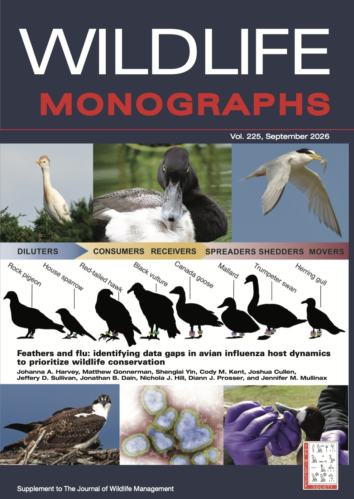

Research
Disease as a driver of bird decline
We study how emerging and co-evolved pathogens interact with the other pressures wild birds face — and we build that understanding into conservation decisions.
Overview
In light of dramatic declines in bird populations, our work addresses the overlooked role of wildlife disease — with particular attention to vector-borne and emerging viral pathogens.
Understanding the compounding effects of anthropogenic stressors — disease, urbanization, contaminants, and climate change — is essential for informing effective conservation and management. The lab uses immunological, transcriptomic, and population-level approaches to understand how wild populations become susceptible to disease, and how they adapt.
Two aims run through everything we do: understand the evolutionary mechanisms of immune response in the wild, and identify emerging disease drivers of wildlife decline in ways that inform management. Much of the fieldwork centers on waterfowl and waterbirds, which sit at the heart of avian influenza dynamics in North America.

Harvey et al., “Feathers and flu”
Theme 01
Avian influenza in wild birds
Highly pathogenic avian influenza H5N1 entered North America in 2021 through Newfoundland, carried by a migratory gull, and has since produced close to 10,000 wild bird occurrences across 255 avian species. The current dominant strain shows an elevated ability to infect hosts, adding a novel stressor to species already stretched by habitat loss, food stress, and contaminants.
We work on the host side of that equation: which species are susceptible, which act as supermovers and superspreaders, and how migration timing, colonial nesting, gregariousness, and shared water habitats structure transmission. Our recent Wildlife Monographs synthesis lays out what is known, what is missing, and where surveillance effort should go next.
Focal systems: waterfowl (mallards, Canada geese, swans), gulls and seabird colonies, raptors and scavengers, and coastal waterbirds.
Theme 02
Host immune response & immunogenetics
When a novel pathogen is introduced to a wild population, one of two things happens. The population may have no innate immunity and experience high-virulence infection and mortality; or individuals may mount an adaptive response that produces tolerance or resistance to future infection. Determining the pathways behind those outcomes in natural infections is a pivotal step in understanding how host populations evolve in response to emerging disease.
We use transcriptomics and immunological assays on field-collected samples to characterize immune response across species and infection states — including work on how sampling and preservation methods affect the quality of the molecular data we can recover from wild birds.
The immunological and pathogenic response mechanisms of circulating H5N1 remain poorly understood across the diverse wild bird and mammal species now being affected. That gap is where much of our bench work sits.
![Diagram showing four uses of a single avian blood sample, radiating from a central blood drop over silhouettes of ducks, geese, gulls and raptors: avian influenza detection via diagnostic signal; transcriptomics yielding differential gene expression and pathway validation; antibody and immune phenotyping using haptoglobin, immune proteins and hemolysis-hemagglutination microtiter plates; and comparative genomics comparing variation within individuals, between species, and across evolutionary conservation.](assets/img/blood-sample-utility.jpg)
Theme 03
Anthropogenic stressors & host–vector–pathogen dynamics
Disease rarely acts alone. Climate change shifts the ranges of vectors and the parasites they carry; urbanization changes food availability, density, and stress; contaminants alter immune function. Our work characterizes host responses across environmental gradients to separate these effects from one another.
This line of research grew out of long-running work on avian haemosporidians — avian malaria parasites — across latitudinal and geographic gradients, and on the effects of urbanization and the invasive parasite Philornis downsi on Darwin’s finches in the Galápagos. Sampling designs deliberately span residents, short-distance migrants, and medium-distance migrants in order to capture infections resulting from climate-driven range shifts.
Theme 04
Decision science & actionable management
Research that stays in the literature does not help a species in decline. We work with wildlife managers, decision scientists, agency partners, and stakeholders to build disease science into the decisions that actually get made — using structured decision making, value-of-information analysis, and quantitative modeling.
Ongoing and recent efforts include next-step frameworks for H5N1 science and management in North America, decision tools to assess loss during marine bird mortality events, and guidance on where limited surveillance and management effort produces the greatest conservation return.
Partnerships have included the U.S. Geological Survey Eastern Ecological Science Center, the University of Maryland, and state and federal wildlife agencies.
Harvey, J.A., Ramey, A.M., Avery-Gomm, S., Robertson, G.J., Romano, M.D., Mullinax, J.M., Boldenow, M.L., Pearson, S.F., Atkinson, P.W., and D.J. Prosser. 2026. A practical decision tool for marine bird mortality assessments. Ornithological Applications duag044.

Methods
What we actually do all day
Molecular & bench
RNA extraction from whole blood and tissue, transcriptomics, immune assays, pathogen screening and genotyping.
Field
Capture and sampling of wild birds, colony and wetland surveys, coordination with banders and rehabilitation networks.
Computational
Phylogenetics, bioinformatics, meta-analysis and synthesis, spatial and temporal transmission modeling in R.
Decision analytic
Structured decision making, expert elicitation, value of information, management strategy evaluation.
Collaborative
Co-production with agency partners so that outputs match the decisions managers face.
Open science
Code and data shared where possible; see our GitHub.
Interested in this work?
We are recruiting graduate students and undergraduate researchers, and we welcome conversations with potential collaborators and agency partners.